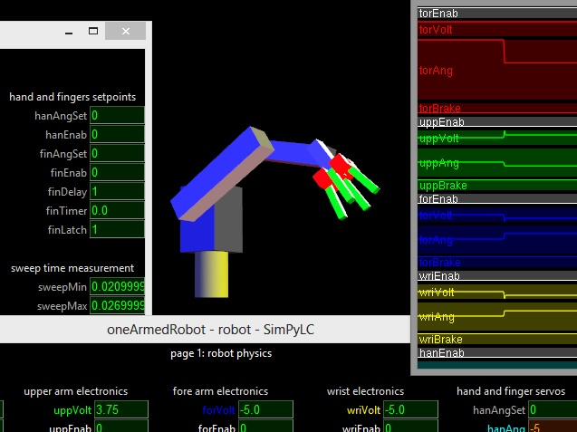
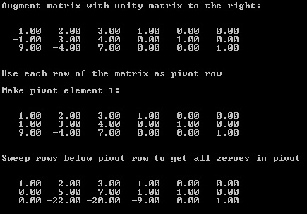

|  |
What SimPyLC does
SimPyLC is a PLC simulator for teaching purposes.
It features an arbitrary number of coupled PLC modules and an arbitrary number of hierarchical OpenGL visualisation models.
An example simulation is provided, as well as a brief HowTo document explaining the underlying principles.
The source code of SimPyLC is very brief and suitable to completely understanding what's going on behind the scenes.
A specially packed Python 2.7 distribution including PyOpenGL, PIL and NumPy is provided for convenience.
Unpack this distribution in an arbitrary directory.
After that, using the command line from the unpacking directory, run setupPython32 or setupPython64, depending on your processor.
Copy the supplied font file QuartzMS.TTF into C:\Windows\Fonts.
Then go to the simulator directory containing the file world.py and start the simulator by entering "python world.py" from the command prompt.
Enter setpoints in degrees for the joint angles (e.g. torAngSet for the torso of the robot) on the movement control page.
After that set "go" to 1 and watch what happens.
GaussJordan
What GaussJordan does
GaussJordan is a straightforward implementation of the Gauss Jordan elimination algorithm for matrix inversion.
It will run with any Python 2.7 distribution, including the one on this webpage, PythonForSimPyLC.
Purposes were:
The temptation to use list comprehensions and operator overloading was largely, but not fully, resisted.
Of course, when using matrices in practice, one should use NumPy and SciPy.
These free libraries, which were written in C, can run rings around this simple demo.
